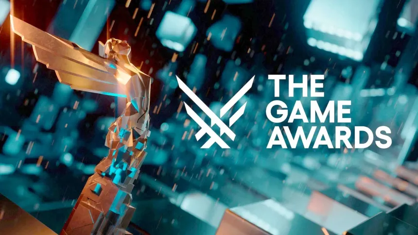

The Game Awards 2026: la gran noche de los videojuegos
The Game Awards es uno de los eventos más importantes de la industria de los videojuegos. Cada año reúne a desarrolladores, estudios, jugadores y aficionados para reconocer los mejores títulos y celebrar las novedades del sector.

¿Qué son The Game Awards?
The Game Awards es una ceremonia anual que premia los videojuegos más destacados del año en diferentes categorías. Entre ellas se encuentra el premio más esperado: Juego del Año (GOTY), que reconoce al título considerado más destacado.
Además de entregar premios, el evento presenta nuevos videojuegos, avances exclusivos, anuncios y actuaciones musicales.
Fecha y lugar de la edición 2026
La gala de 2026 se celebrará el 10 de diciembre de 2026 en el Peacock Theater de Los Ángeles, Estados Unidos. El evento se podrá seguir en directo y de forma gratuita a través de las principales plataformas de streaming.
The Game Awards celebra los mejores videojuegos del año y permite descubrir algunos de los próximos grandes lanzamientos.
¿Cómo se eligen los ganadores?
Los nominados de la mayoría de categorías son seleccionados por un jurado internacional formado por más de 100 medios de comunicación y publicaciones especializadas en videojuegos.
Cada medio propone sus cinco candidatos favoritos por categoría. Los juegos que aparecen en más votaciones consiguen una nominación. Después, el jurado y el público participan en la elección de los ganadores.
Las nominaciones de 2026
El 17 de noviembre se anunciaron los seis videojuegos candidatos al premio más importante de la gala: Juego del Año (GOTY). Estos son los títulos que competirán por conseguir el reconocimineto:
- 007 First Light
- Control Resonant
- Grand Theft Auto VI
- Phantom Blade Zero
- Resident Evil Requiem
- The Lengend of Zelda: Ocarina of Time
Entre los candidatos destacan dos grandes nombres que también tienen protagonismo en GameZone: GTA VI y The Legend Of Zelda: Ocarina of Time. Ambos competirán por llevarse el premio.
Información oficial
Información consultada el 17 de noviembre de 2026.